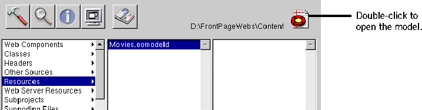
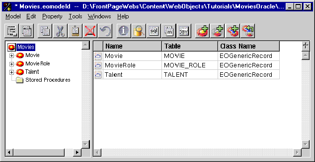

Creating a WebObjects Database Application
 Table of Contents
Table of Contents  Previous Section
Previous Section
Refining Your Model
The model created for you by the wizard is just a starting point. For most applications, you need to do some additional work to your model to make it useful in your application. To refine your model so that it can be used in the Movies application, you'll ultimately need to do all of the following:
These steps are described in more detail throughout the rest of this tutorial.
Opening Your Model
- In Project Builder, click the Resources category.
- Select Movies.eomodeld.
- Double-click the model icon.

Project Builder opens your model file in EOModeler, launching EOModeler first if it isn't already running. EOModeler displays your model in the Model Editor. It lists the entities for the tables you specified in the wizard-Movie, MovieRole, and Talent.

Table of Contents  Next Section
Next Section